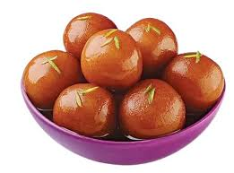

Gulab Jamun
Description
The Sweet which is my Favourite.
Gulab jamun is an Indian dessert of fried dough balls that are soaked in a sweet, sticky sugar syrup. As per tradition, the syrup has a delicate rose flavour: Gulab means 'rose water' and jamun refers to a berry of a similar size and colour.
Ingredients
- 1/2 tin ---- Nestlé MILKMAID
- 2 cups(200 gm) ---- Flour
- 600 gm,grated ---- Paneer
- 200 gm ---- Sooji/Rava
- 1½ tsp ---- Baking Powder
- 1½ tsp ---- Baking Soda
- for frying ---- Oil
- 2 litres ---- Water
- 1 kg ---- Sugar
- 6-8 nos, coarsely crushed ---- Cardamom
Steps to make a Sweet and Soft Gulab Jamun
- Step 1 : Boil sugar and water to prepare syrup remove from fire; add cardamom and keep aside to cool.
- Step 2 : In a mixing bowl put the flour, paneer, sooji, Nestlé MILKMAID , baking powder and baking soda. Mix gently to make a soft dough, do not knead too much.
- Step 3 : Divide the mixture into 30-35 portions and gently roll into round gulab jamuns. Fry in the oil at very low flame till golden brown in color.
- Step 4 : Keep putting the fried gulab jamuns in the prepared sugar syrup, once all the gulab jamuns are in the sugar syrup bring it to a boil and remove from flame.
- Step 5 : Serve warm.